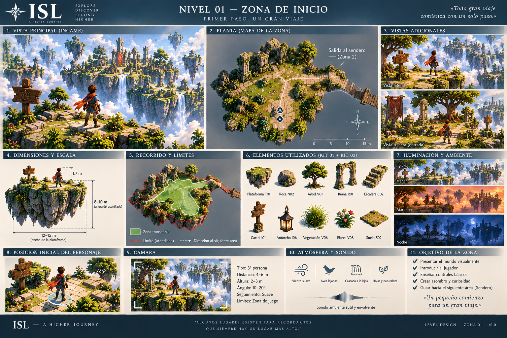
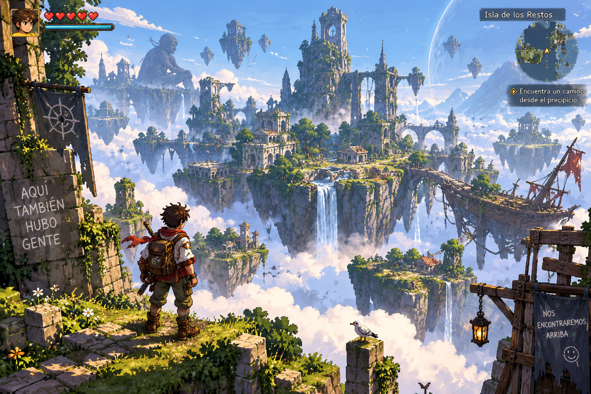
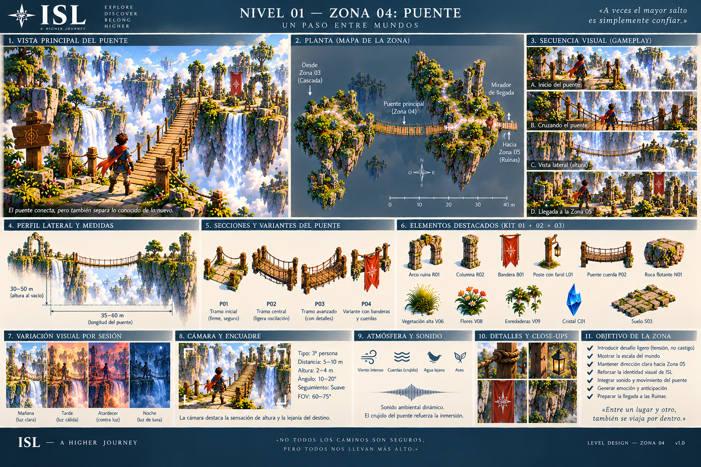
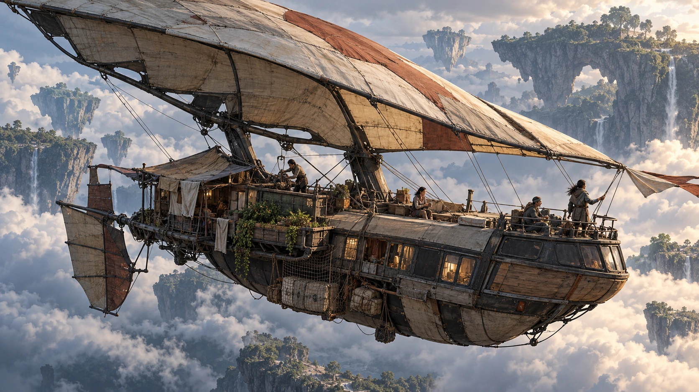
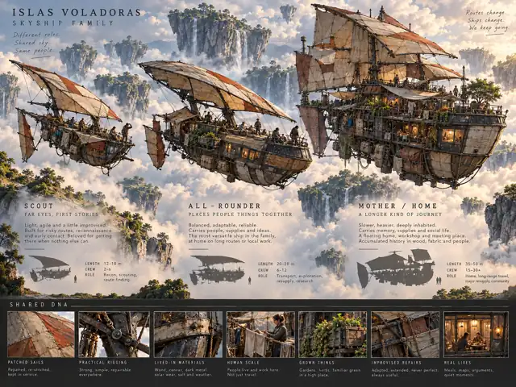
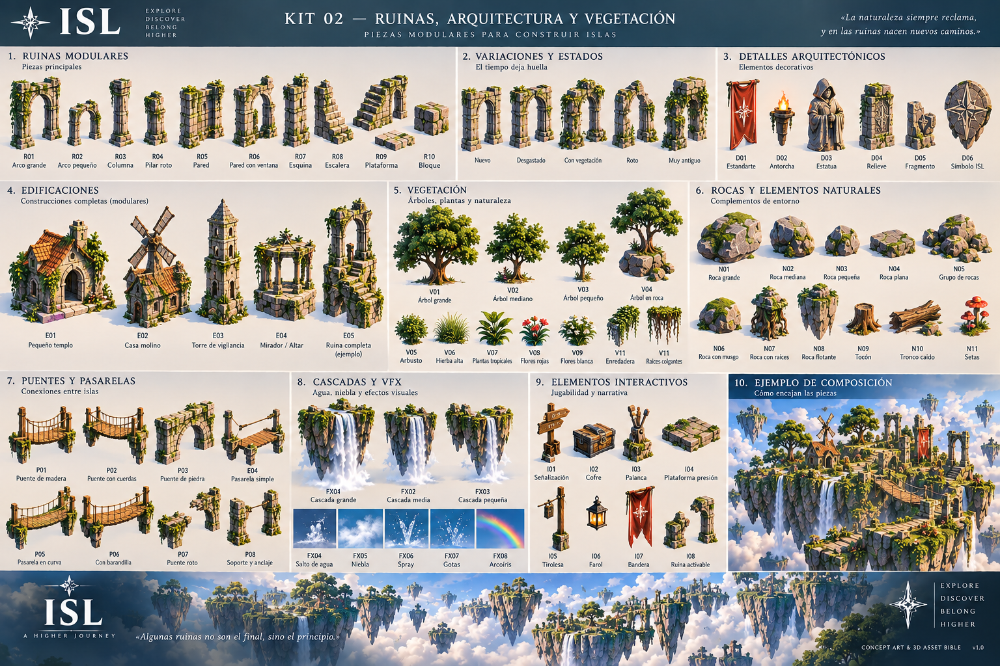
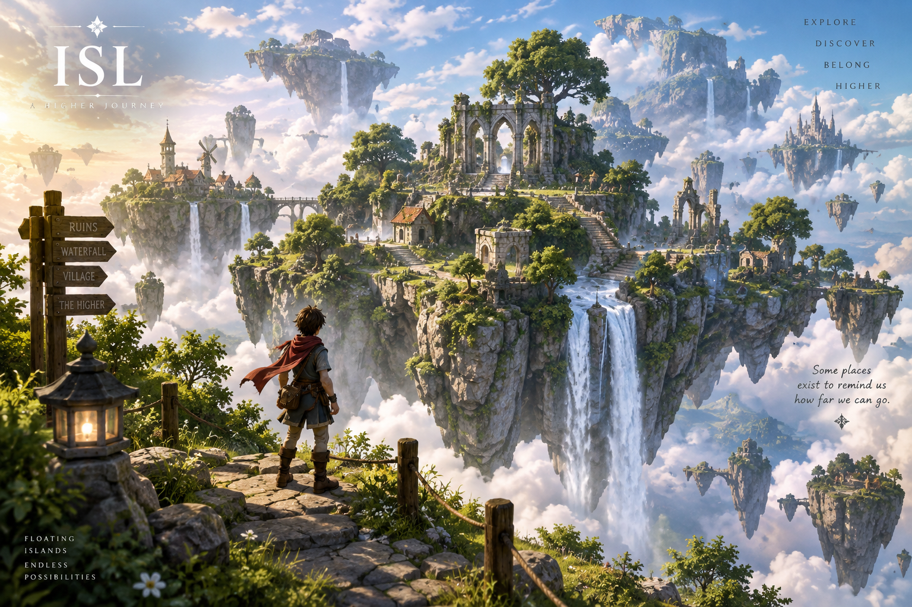
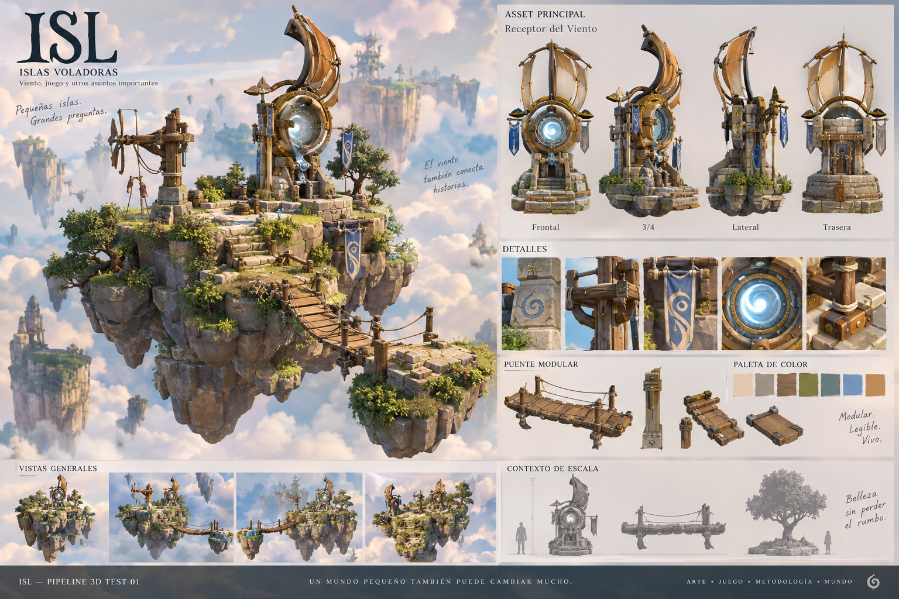

No vengas a entenderlo todo.
Entra. Mira qué recuerdas. Qué te da curiosidad. Qué parte del mundo parece estar esperándote.

Empieza pequeño.
Antes del mapa, una relación. Antes de la misión, una presencia. Antes de saber adónde vas, algo te hace querer quedarte.

Entonces aparece el cielo.
El mundo se abre. No para llenarlo de marcadores, sino para que quieras llegar a algún sitio que todavía no comprendes.

Empiezas a mirar demasiado.
Mapas. Reglas. Criaturas. Reliquias. Rutas. La curiosidad deja de ser paseo y empieza a pedir respuestas.

La teoría no te salva.
Algo rompe la estabilidad. El mundo deja de ser una idea bonita y exige una decisión, un coste o una mano tendida.

Una casa que aprendió a volar.
Volver no significa retroceder. La nave reúne rutina, tripulación, reparación, silencio y la posibilidad de intentarlo otra vez.

El cielo deja de ser paisaje.
Viento, encuentros, maniobras, relaciones y consecuencias empiezan a chocar. Lo cotidiano y lo imposible ya viven en la misma cubierta.

Entras donde no querías mirar.
La escala se vuelve presión. Hay menos información, más silencio y una presencia humana que todavía no desaparece.
PROXY VISUAL · NO ESCENA FINAL
El mundo vuelve a respirar.
No porque todo se haya arreglado. Porque después del valle vuelves a ocupar espacio de otra manera.

No termina. Cambia de manos.
Construir, dibujar, reparar, elegir, recordar. Lo que haces deja una Huella; regresar debería permitirte notar que el mundo también siguió viviendo.
¿Por dónde quieres volver a entrar?
La misma puerta, tres profundidades. No son tres landings distintas: son tres maneras de seguir dentro del mismo mundo.
Arte, criaturas, música, objetos, 3D, Huellas y making-of.
JUGARLo que ya existeEntrar en los prototipos y comprobar qué sobrevive en tus manos.
ENTENDERLas tripasEstado real, pruebas, rumbo y qué está listo frente a lo que sigue siendo visión.